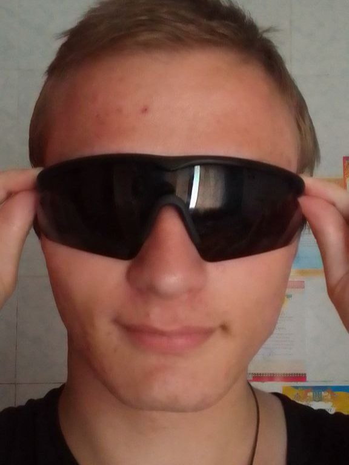

Учасник 1: Чернега Сергій
Про мене
Мене звати Чернега Сергій, я студент групи 2АКІТР-25б. Навчаюся на спеціальності, яка охоплює три важливі напрямки сучасних технологій: автоматизацію, комп’ютерно‐інформаційні технології та робототехніку.
Мої інтереси у вебтехнологіях
Вебтехнології — це захоплююча галузь, яка постійно розвивається. Мене найбільше цікавить backend-розробка та все, що відбувається «під капотом»: архітектура серверів, мережеві протоколи, механізми безпеки (такі як OAuth2 та OpenID Connect), а також взаємодія між серверами та вбудованими системами. Мені подобається працювати з логікою бізнесу, базами даних та створювати експериментальні серверні рішення.
Цілі навчання
У рамках цього курсу я прагну освоїти основи HTML‐верстки, навчитися працювати з системою контролю версій Git та здобути практичні навички командної роботи. Крім того, я планую поглибити знання в JavaScript для створення інтерактивності та опанувати основи серверного програмування на PHP, щоб розуміти повний цикл розробки вебдодатків — від інтерфейсу користувача до логіки на боці сервера.
Мій девіз
CSS will change the world!
Для мене це не просто фраза — це принцип, якому я слідую. CSS змінив моє бачення вебу,
показавши, що естетика та функціональність можуть існувати в гармонії. Я вірю, що правильно
застосовані стилі можуть кардинально покращити користувацький досвід і зробити технології
доступнішими для кожного.
Контактна інформація
Зі мною можна зв'язатися через GitHub для обговорення проєктів та співпраці.
Учасник 2: Гевко Андрій
Про мене
Мене звати Гевко Андрій, я студент групи 2АКІТР-25б. Я здобуваю освіту за спеціальністю, що поєднує три ключові напрями сучасних технологій: автоматизацію, комп’ютерно-інформаційні технології та робототехніку.
Мої навички
- Робота з мікроконтролерами Arduino
- Розуміння принципів автоматизованих систем керування
- Навички роботи з електронними компонентами
- Вміння створювати прості схеми в середовищі Proteus або Tinkercad
- Основи 3D-моделювання
- Командна робота та використання системи контролю версій Git
Мої досягнення
- Успішно завершив навчальні курси з основ програмування
- Створив свій перший роботизований проєкт на базі Arduino
- Отримав сертифікат з основ Python від SoloLearn